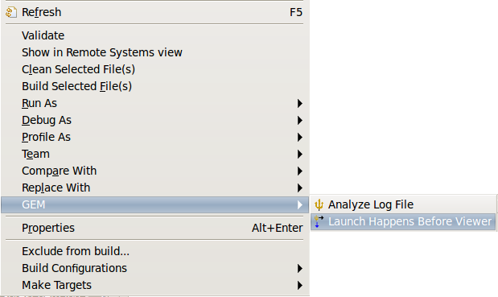
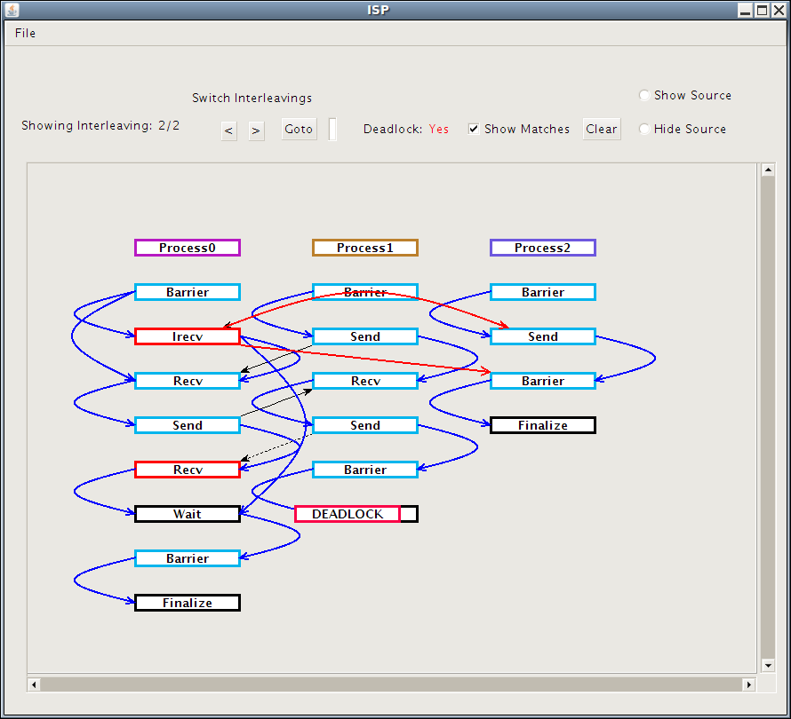
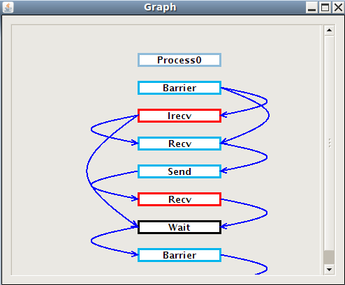

|
Happens Before Viewer
|
Running the Happens Before Viewer
The Happens Before Viewer may be launched from within the Analyzer View or
on a log file directly; via context menus as shown in the image below:
Note: The generated log file will be in a directory named "gem" at the same level as the source code file
in the project explorer.
-
From the Analyzer View, simply click the HB Viewer button after the analyzer has been run.
-
From the Project Explorer window, right click on source code or ISP generated log file
and select
Launch Happens Before Viewer from the GEM context menu.

Understanding What You See
-
Showing Interleaving: indicates which interleaving is being shown and how many there are in total.
-
Deadlock:Is either followed by no or yes,
and indicates if any of the interleavings has a deadlock.
-
Red Bordered DEADLOCK at the bottom of the window indicates that at this point the currently selected
interleaving is deadlocked. Calls above this will be issued and calls that would come afterward are not shown.
-
Process[Number]: This specifies which Process the calls below it belong to (Where Number is the number
of the process in question). The color of the border around this text is arbitrary and serves only to help
the human eye distinguish the various columns and return to a column of interest more quickly.
-
Blue Arrows: show CB (Completes Before) edges that stay in the same process. A CB edge is a guarantee
that the source must complete before the destination. For example a Barrier will always have a CB edge
connecting it to the next call in the same process because the next call cannot complete before the barrier
is finished. It is important to note though that there is only a CB edge to each call blocked by the call in
question. As an example lets imagine that a Barrier is followed by a second Barrier and then a Send. There
is a CB edge between the first and second Barrier and between the second Barrier and the Send, but none
between the first Barrier and the Send because it the second Barriers that directly blocks the send. The
CB edges are by default not shown, but 4.3 will show you how to make them appear.
-
Red Arrows show CB edges that connect calls of different processes.
-
Black Arrows connect calls that match. For example a Send will have a Black Arrow pointing to the
Receive that picks up its message.
-
Dotted Black Arrows like solid Block Arrows these connect calls that match. The only difference
is that these connect a Red Bordered call.
-
Red Borders indicates that this call is the source of a different interleaving. Or in other words
that what is currently being displayed is one potential match for the Red Bordered call, but that another
possible match exists and can be viewed by changing which interleaving is being shown.

Changing What You See
To change which log file you are viewing you can click File -> Open Trace and navigate to the desired file.
-
To change which Interleaving you are viewing you can click on the < or > buttons or click “Goto”
after providing the desired interleaving number in the text box next to it.
-
To toggle whether or not you want matches to shown use the check box next to “Show Matches”.
-
To reset the view back to how it was before you made changes click the “Clear” button.
-
To see the source file that generated the log click on “Show Source”.
-
To see only the Intra-process Completes-Before Edges (CBs for a given Processes right click that process and
select “ViewIntraCB”.

-
To add Completes-Before Edges (CBs) for a given call to the current window, right click the call and select either View
IntraCB, View InterCB, or View Both as desired. Lastly you will need to indicate whether you want to view
the results in the current window or in a new popup window.
Back to Top | Back to Table of Contents
School of Computing * 50 S. Central Campus Dr. Rm. 3190 * Salt Lake City, UT
84112 * isp-dev@cs.utah.edu
License